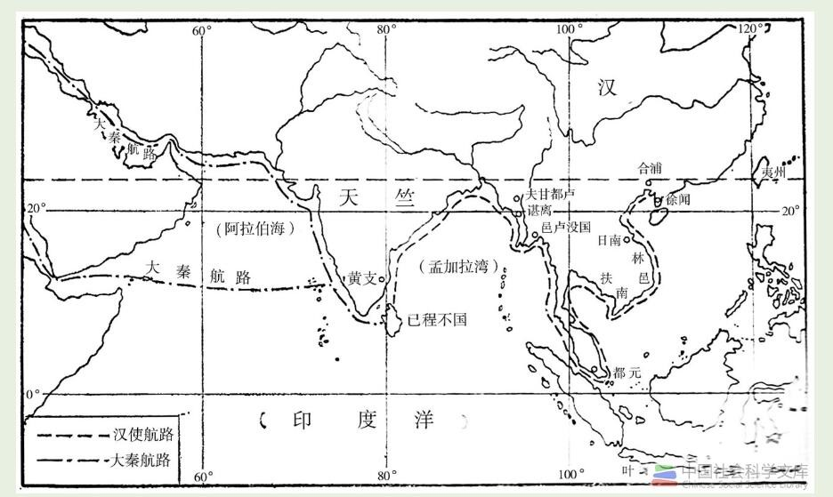

我国南海的海上贸易活动起歩很早，到汉武帝时期，国力强盛，国际外交与贸易活动空前开展起来。汉武帝在遭张骞两度出使西域， 开辟了横爵亚洲大陆的陆上丝绸之路之后，又利用雄厚的航海实力，大力开拓南海对外交通，这就导致了中国历史上第一条印度洋远洋航路的产生。
出自中国社会科学文库
据班固所撰《汉书·地理志》记载，该航路如下：
“自日南障塞、徐闻、合浦，船行可五月，有都元国；又船行可四月，有邑卢没国；又船行可十余日，有谌离国；步行可十余日，有夫甘都卢国。 自夫甘都卢国船行可二月余，有黄支国，…所至国皆禀食为耦，蛮夷贾船，转送致之，亦利交易。剽杀人，又苦逢风波湖死；不者，数年来还。…自黄支船行可八月， 到皮宗；船行可二月，到日南象林界云，黄支之南，有已程不国，汉之译使自此还矣”。